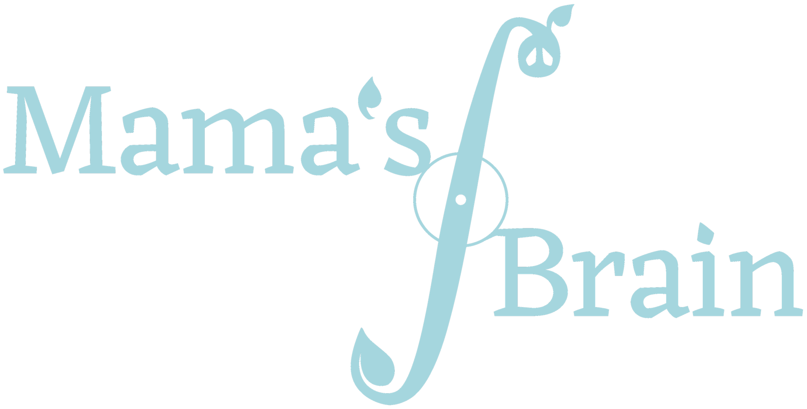

MB · Mama's Brain
Conscious intelligence for expert workflows.
MB Solutions builds digital twins of complex professional workflows — structured, measurable environments where experts and AI systems decide together. Wings, not autopilot.

Current focus: finance — coordinating and augmenting professional workflows with AI agents across trading, wealth management, and portfolio management. First product: AgentPortfolio.
Principle
Synergy over substitution
AI that augments expert judgment instead of replacing it — measurable, auditable, and honest about what it does not know.
Product
AgentPortfolio
A digital twin for portfolio decisions: market signals, news analysis, and agent coordination in one structured environment.